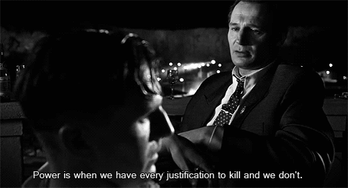
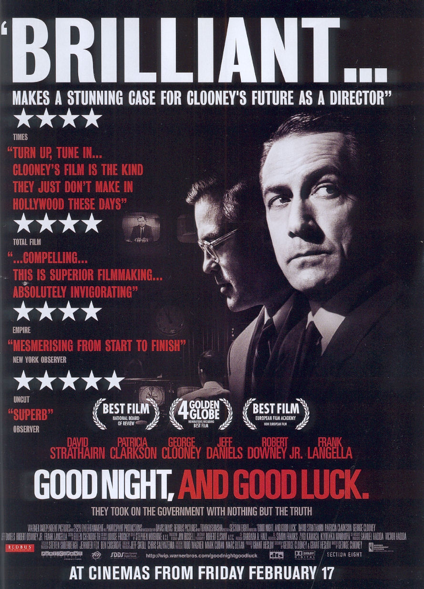
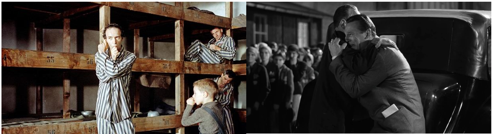
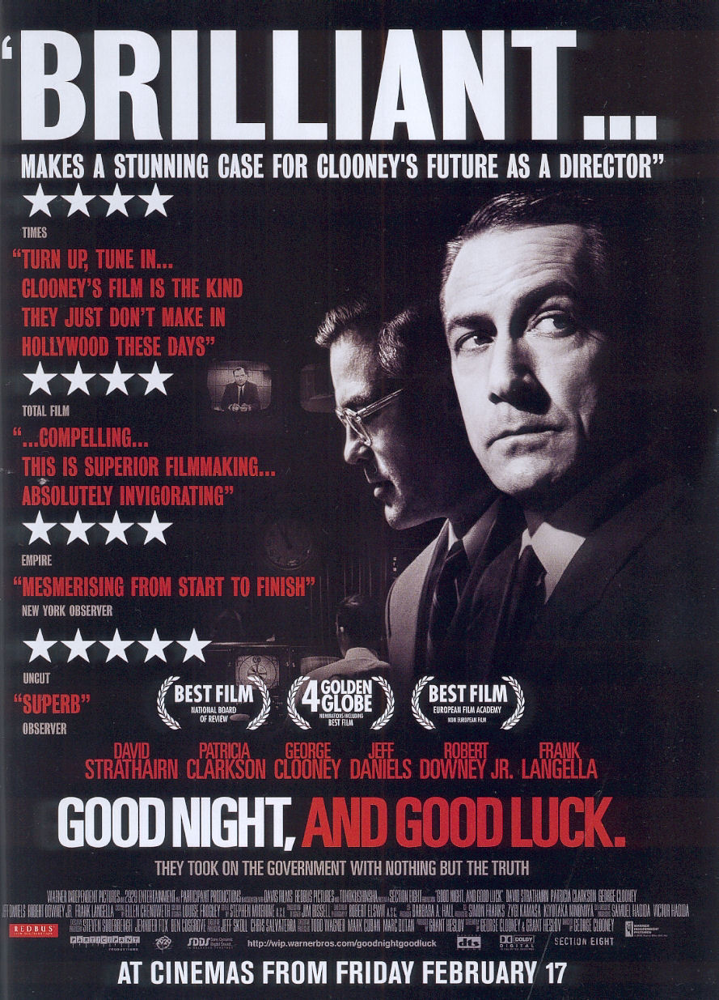
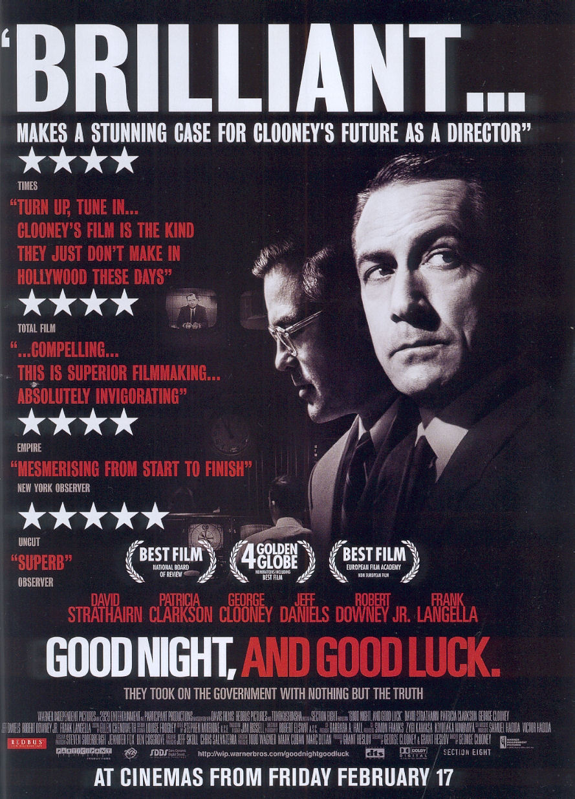

Oltre l'Intrattenimento: Il Ruolo Sociale del Cinema
“Ogni epoca ha un modo di trasmettere i messaggi" afferma il regista e professore Tobia Pescia. Oggi il cinema non è più solo una forma d'intrattenimento, ma un potente strumento capace di plasmare opinioni, sensibilizzare su tematiche sociali e promuovere il cambiamento.
Dai film che devolvono i loro incassi in beneficenza alle storie che portano alla luce ingiustizie e problemi attuali, il cinema si conferma come un medium insostituibile nel trasmettere messaggi che risuonano ben oltre lo schermo. Il mondo del cinema continua a influenzare e riflettere la società, adattandosi ai tempi e rispondendo alle necessità della contemporaneità.
Contesto storico
Lo studio in questione comincia selezionando fra tutti i film che hanno vinto l’Oscar come “Best Motion Picture” soltanto quelli che trasmettono un contenuto socialmente importante. Una prima analisi è stata fatta osservando come nel tempo è cambiato il modo di comunicare il messaggio: come sostiene Elena Marcheschi, docente di Arte e multimedialità presso l’università di Pisa, nei film del periodo tra gli anni Trenta e Cinquanta non c’è la volontà di promuovere una certa tematica e il linguaggio è meno narrativo, con attenzione principale per l’immagine. Un Film come All'ovest niente di nuovo (All Quiet on the Western Front,1929) ha come tema principale la guerra ma l’obiettivo non è quello di sensibilizzare il pubblico sull’argomento, ma di descrivere oggettivamente il fenomeno.
In tempi più recenti si è assistito a un crescente interesse per temi come la disuguaglianza e la discriminazione, dovuto all'interconnessione e al concetto di villaggio globale di McLuhan.
Con l’evoluzione della tecnologia e la diffusione dei social media, le informazioni viaggiano più rapidamente e facilmente, rendendo le problematiche sociali più visibili, facendo emergere la necessità di rappresentarle sullo schermo.
Un film che colpisce profondamente per la sua rappresentazione delle disuguaglianze sociali è Parasite (2019), pellicola sudcoreana, diretta da Bong Joon-ho, si distingue per la sua narrazione incisiva e sconcertante. Il film esplora le profonde disparità tra le classi sociali, raccontando la storia di due famiglie, una ricca e l'altra povera, le cui vite si intrecciano in modi inaspettati e drammatici; non solo riesce a mettere in luce le ingiustizie e le tensioni sociali, ma lo fa con un approccio unico che tiene gli spettatori incollati allo schermo, spingendoli a riflettere sulle dinamiche socio-economiche della società moderna.
All’interno della ricerca sono state usate quattro fonti principali di dati: IMDB, Kaggle, Box Office Mojo e Rotten Tomatoes. Da IMDB è stato eseguito web scraping per raccogliere le recensioni degli utenti e successivamente per effettuare la sentiment analysis su di esse. La piattaforma Kaggle è servita per ricavare un dataset sui vincitori dei film Oscar mentre Box Office Mojo fornisce dati dettagliati sulle performance finanziarie dei film, è stato quindi impiegato per fare un’analisi di correlazione tra gradimento del pubblico e incasso e per osservare quali sono stati i film che hanno guadagnato maggiormente. Infine Rotten Tomatoes è stato impiegato per estrarre le recensioni da parte della critica.
Un confronto tra diverse culture
Una domanda da porsi potrebbe essere: ci sono differenze significative nella rappresentazione dei problemi sociali nel cinema di diverse culture e paesi? Uno degli esperti afferma che la cultura influenza molto i temi che vengono affrontati: analizzando il cinema francese, un tema sociale fortemente usato è quello dell’immigrazione, nel cinema sudcoreano spesso si esplorano tematiche come le pressioni sociali, il conflitto generazionale e la ricerca dell'identità culturale. In contrasto, il cinema americano tende a concentrarsi maggiormente sui problemi sociali come la discriminazione razziale, le disuguaglianze economiche e la violenza urbana.
Generi vincitori agli Oscar
Ma quali sono i generi più rilevanti tra i film vincitori di Oscar? A dominare la classifica è il dramma, caratterizzato dalla sua capacità di esplorare profondamente la condizione umana attraverso storie complesse e personaggi sfaccettati. Questi film spesso affrontano tematiche universali come l'amore, il conflitto, e la ricerca di significato, guadagnandosi il riconoscimento del pubblico per la loro profondità emotiva e narrativa. Accanto al dramma, generi come il biografico e la commedia emergono come prevalenti: i film biografici riescono a portare alla luce storie di figure storiche o contemporanee che hanno lasciato un'impronta significativa sulla società. Le commedie, nonostante il loro brio e umorismo, sono in grado di affrontare tematiche profonde con intelligenza e leggerezza.
Ma quindi quale è stata la reazione del pubblico a certe tematiche sociali?
Il mondo del cinema è spesso teatro di vivaci discussioni, soprattutto quando si tratta dei vincitori dell’ambito premio Oscar. Il divario tra il giudizio della critica e quello del pubblico è un tema ricorrente, e alcuni film simbolo degli ultimi decenni ne sono un perfetto esempio. Una domanda cruciale da porsi riguardo ai film vincitori dell'Oscar è: qual è stata la reazione del pubblico in relazione alla rappresentazione delle tematiche sociali trattate in questi film? Per ottenere una prima risposta, sono state osservate le valutazioni (ratings) che gli utenti hanno dato ai differenti film.
Il film che ha riscosso un notevole successo da parte del pubblico è stato Schindler's List (1994). Questa pellicola biografica racconta la storia di Oskar Schindler, un industriale tedesco che riuscì a salvare migliaia di ebrei dalla Shoah. La rappresentazione autentica e commovente degli eventi storici ha profondamente colpito gli spettatori, rendendolo uno dei film più apprezzati di sempre. Segue Forrest Gump (1994), che narra la storia di un uomo semplice con un basso quoziente intellettivo che attraversa decenni di storia americana, raggiungendo incredibili successi, trovando l'amore e ispirando chiunque incontri. Il pubblico ha amato la performance di Tom Hanks e la capacità del film di intrecciare eventi storici con una narrazione personale e avvincente.

Al contrario, alcuni film vincitori dell’Oscar non hanno ottenuto lo stesso entusiasmo. La mia Africa (1985), che esplora il rapporto tra colonizzatori europei e popolazioni africane indigene, non ha raggiunto lo stesso livello di apprezzamento. La forma dell'acqua (2017), diretto da Guillermo del Toro, racconta la storia di una donna muta che si innamora di una creatura anfibia prigioniera in un laboratorio governativo. Nonostante l'originalità della trama e l'atmosfera magica, le valutazioni si sono rivelate basse. Infine, Nomadland (2021), che segue la vita di una donna che adotta uno stile di vita nomade, sebbene abbia ricevuto critiche eccellenti per la sua narrazione poetica e la performance di Frances McDormand, le valutazioni del pubblico hanno riflesso punteggi più scarsi.
I film vincitori del prestigioso premio Oscar spesso scatenano discussioni vivaci, e le opinioni degli spettatori possono differire notevolmente da quelle della critica. Per comprendere appieno queste discrepanze, è fondamentale esaminare e confrontare le recensioni rilasciate da entrambe le parti. Analizzando le valutazioni degli esperti e le reazioni del pubblico, possiamo ottenere una visione più chiara delle divergenze di giudizio che caratterizzano i film premiati dall'Academy.
Divergenze tra critica e pubblico e analisi sull’incasso
I film vincitori del prestigioso premio Oscar spesso scatenano discussioni vivaci, e le opinioni degli spettatori possono differire notevolmente da quelle della critica. Per comprendere appieno queste discrepanze, è fondamentale esaminare e confrontare le recensioni rilasciate da entrambe le parti. Analizzando le valutazioni degli esperti e le reazioni del pubblico, possiamo ottenere una visione più chiara delle divergenze di giudizio che caratterizzano i film premiati dall'Academy.
Realizzando un'analisi dei commenti sui film presi in esame e distinti per genere, emerge una netta maggioranza di recensioni positive. Tuttavia, si osserva che mentre gli spettatori tendono ad avere una maggiore polarizzazione nei loro commenti, la critica presenta molti più giudizi neutri e negativi, specialmente per i generi commedia, avventura e biografia.
Nel complesso, i film vincitori dell'Oscar sono generalmente ben graditi, dato che la maggioranza dei commenti è positiva in entrambi gli scenari. Tuttavia, esistono rari casi in cui determinati film non sono ben apprezzati dal pubblico, come è stato osservato precedentemente per il caso delle valutazioni degli spettatori. Questo fenomeno evidenzia come le percezioni tra critica e spettatori possano divergere significativamente.
Un altro aspetto da esplorare è se il gradimento del pubblico sia effettivamente correlato con l’incasso del film. Capire questa relazione potrebbe offrire un ulteriore livello di comprensione sul successo commerciale dei film premiati. La correlazione tra il gradimento e gli incassi potrebbe sembrare scontata, ma una verifica accurata è necessaria per confermare questa ipotesi.
La risposta è affermativa solo per un numero limitato di film, come 12 Anni schiavo (2013), Schindler's List e Parasite, rappresentati dai punti vicini alla retta. Tuttavia, nella maggior parte dei casi, i due aspetti sono estremamente scorrelati. Questo suggerisce che un alto gradimento non si traduce necessariamente in un grande successo commerciale e viceversa.
Bert Topic
Il fatto di avere attori noti ha influenzato la notorietà del film?
I nostri esperti non concordano su questo punto: da un lato c’è chi afferma che la celebrità di un attore può aiutare ma non è fondamentale, dall’altro c’è chi considera rilevante, per il successo di un film, avere un attore famoso sia nel cinema popolare che in quello più colto. La presenza di una figura di rilievo come George Clooney, che diventa rappresentante del progressismo americano, ha fatto sì che un film come Good Night, and Good Luck (2005) riscuotesse un discreto successo ponendo attenzione sulla questione del maccartismo. Non si tratta più solo di intrattenimento, ma di film con un chiaro schieramento politico.

L'impatto del cinema oltre l'Oscar
È forse riduttivo considerare i soli film che hanno vinto l’Oscar? Probabilmente sì, per questo è doveroso citare altri film che, nonostante non abbiano vinto l’ambito premio, parlano di messaggi sociali importanti ed hanno suscitato reazioni negli spettatori.
Hotel Rwanda (2004) è un film basato sul genocidio in Ruanda avvenuto nel 1994 che, non solo racconta la storia di questa tragedia, ma cerca di smuovere il pubblico: i produttori del film, insieme alla Fondazione Nazioni Unite, hanno creato un fondo internazionale per il Ruanda, con l’obiettivo di supportare le iniziative del Programma delle Nazioni Unite Per Lo Sviluppo e assistere i sopravvissuti ruandesi. Una dimostrazione di come il cinema possa fungere da portavoce per la diffusione di temi importanti e motivare lo spettatore a promuovere il bene.
E come non citare un film come C’è ancora domani? (2023) “Paola Cortellesi con il suo film è stata in grado di abbattere le barriere che separano le varie fasce di spettatori”, dice il ricercatore e docente di cinema Maurizio Ambrosini. Ha parlato a tutti, è stato apprezzato sia negli ambienti cinematografici più colti che nel vasto pubblico popolare. Ha avuto una capacità di risonanza notevole che ha provocato delle scosse nella coscienza dello spettatore. Ci sono dei momenti di straniamento: si sceglie di non rappresentare la violenza direttamente ma di esprimerla sotto forma di una danza e questo ci colpisce soprattutto perché siamo in un mondo dove la violenza è all’ordine del giorno.
È interessante notare come nel cinema una stessa tematica può essere trattata in modo completamente diverso. Se prendiamo in considerazione la questione afroamericana, un film come Green Book (2018) ha affrontato la discriminazione in modo più tradizionale capace di parlare a un pubblico ampio. Questa forma tradizionale di rappresentazione del tema sta perdendo la sua efficacia? Un film come Get Out (2017) ha fatto un’operazione molto interessante: all’interno della cornice dell’horror viene inserito il tema riproponendolo con un respiro nuovo ed efficace.
Spostandoci al tema dell’olocausto, La vita è bella (1997) di Roberto Benigni è riuscito a trattare questo terribile argomento rovesciando i tradizionali toni e introducendo un aspetto fiabesco, che promuove una presa di coscienza nel pubblico ma lo fa in modo sottile e leggero. Schindler's List, invece, è più spettacolare nella rappresentazione del dramma; Spielberg segue la strada dello shock, è un film molto duro che è capace di penetrare nel pubblico.
Hotel Rwanda
C'è ancora domani
Green book
Get out

La vita è bella
Schindler's list
Lo studio dell’analisi del sentiment è stato esteso per comprendere meglio le percezioni e le emozioni del pubblico verso una serie di film, al di là del riconoscimento ufficiale dell'Academy. I risultati offrono una visione più completa delle preferenze e delle aspettative degli spettatori, contribuendo a identificare i fattori che influenzano il successo e la popolarità dei film, indipendentemente dai premi vinti.
Quello che si riesce a osservare è che nei giudizi degli utenti prevalgono le recensioni positive nei tre generi; questo potrebbe essere dovuto a diversi fattori, come le aspettative del pubblico, il coinvolgimento emotivo, o una valutazione meno tecnica dei film. Le valutazioni della critica, invece, si basano su criteri più rigorosi e dettagliati e per questo mostrano una distribuzione più equilibrata tra sentiment positivo, negativo e neutrale rispetto alle recensioni degli utenti. Queste informazioni sono utili per capire come diverse parti del pubblico percepiscono i film e sono uno strumento per i produttori nella comprensione di come indirizzare al meglio le future produzioni cinematografiche.
Ma quindi il cinema è davvero in grado di provocare delle reazioni del pubblico?
Come sottolineato anche dalle analisi realizzate in questo articolo, sicuramente il cinema ha un forte impatto sull’audience ma diventa sempre più difficile produrre film che riescano a soddisfare pienamente le aspettative dello spettatore; succede spesso che pellicole basate su tematiche rilevanti finiscano presto nel dimenticatoio: un esempio è Il club (2015) che tratta il tema della pedofilia nella chiesa come Il caso Spotlight (2015), ma a differenza di quest’ultimo non ha ottenuto alcuna candidatura ai premi dell’Academy, forse perché il messaggio è stato sviluppato in modo più sconvolgente e duro; a causa di ciò è stato relegato ai film di nicchia.
Tobia Pescia afferma che per far sì che il cinema possa evolvere e diventare uno strumento ancora più potente per il cambiamento sociale è necessario mantenere vivo il desiderio del film. La sfida è proprio quella di individuare nuovi metodi capaci di oltrepassare le barriere del cinema tradizionale mainstream: gli sceneggiatori ed i registi devono riuscire a risvegliare i valori sociali spesso “anestetizzati” dall’uso frenetico dei social media.
Quali sono, dunque, i passi necessari affinché il cinema possa evolvere e avere un impatto più significativo sulla società nel futuro? E i film riusciranno nell’intento?


 
